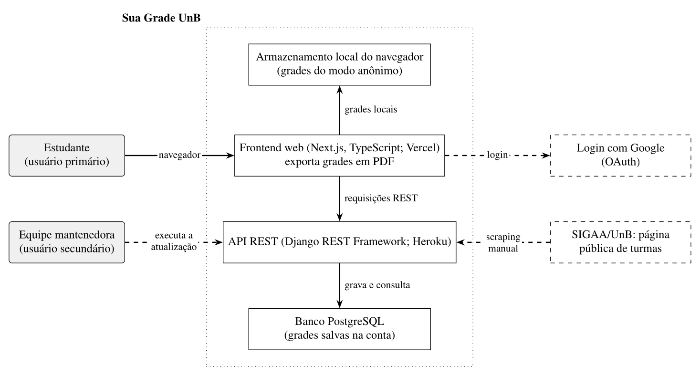
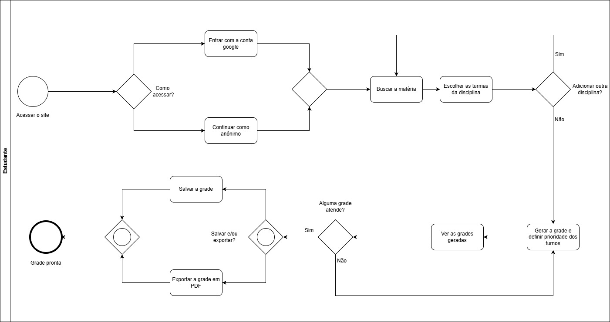

2.3 Descrição do Produto
O objetivo desta página é fornecer uma visão geral do software em avaliação, com seu tipo, suas funções, seus componentes e os fatos que sustentam a descrição.
Informações Básicas
- Nome do produto: Sua Grade UnB
- Versão avaliada: estado em produção em 17/10/2026. O produto não exibe número de versão.
- Aplicação do produto: aplicação web de planejamento acadêmico, que ajuda estudantes a montar suas grades horárias
- Classificação do produto: COTS (commercial off-the-shelf), segundo a IEEE 1062: todos os usuários usam o mesmo produto, sem personalização por cliente. É distribuído como software livre.
- Origem: projeto da disciplina Métodos de Desenvolvimento de Software (MDS), da UnB
- Repositório do código principal: GitHub: unb-mds/2023-2-SuaGradeUnB
- Licença do produto: MIT License
- Linguagens de implementação: TypeScript (frontend) e Python (backend)
- Site oficial: https://suagradeunb.com.br
- API: https://api.suagradeunb.com.br
- Documentação: Arquitetura
- Último commit no repositório: 15/02/2026
2.3.1 Sobre o Sua Grade UnB
O que é?
O Sua Grade UnB ajuda estudantes da UnB a montar suas grades horárias de forma fácil e intuitiva. O estudante busca disciplinas por matéria ou professor, escolhe as turmas, e o sistema gera combinações de grade sem conflitos de horário. As grades podem ser salvas e exportadas em PDF.
Arquitetura técnica
O produto é formado por duas aplicações:
- O frontend (
suagradeunb.com.br), em TypeScript, Next.js e Tailwind CSS, hospedado na Vercel. - O backend, uma API REST (
api.suagradeunb.com.br), em Python, Django e Django REST Framework, com banco PostgreSQL, hospedado no Heroku.
Os dados de turmas vêm de web scraping da página pública de turmas do SIGAA e ficam no banco. Segundo a documentação, a atualização é manual, feita pela equipe de desenvolvimento, que tenta rodá-la a cada 24 h.
A geração de grades usa produto cartesiano (itertools.product), com filtro de conflitos e de disciplinas repetidas. A API retorna as cinco melhores grades.
Figura 1: Contexto do Sua Grade UnB. Linhas tracejadas indicam fontes e ações externas ao produto.

Autor(es): João Vitor, 2026.
2.3.2 Sobre o uso do Sua Grade UnB
- Funções do produto: login com Google; acesso anônimo; busca por matéria ou professor; consulta de turmas; geração de grades com prioridade de turno; salvamento; exportação em PDF
- Público-alvo: estudantes da UnB, com uso básico de navegador
- Dispositivos e conectividade: basta um navegador com internet.
- Modos de uso: anônimo (as grades ficam no navegador) e com login Google (as grades ficam salvas na conta e acessíveis de outro dispositivo)
- Suporte: repositório do GitHub, na aba "Sobre" no site, com instruções de uso e como contribuir.
Fluxos da navegação mapeada
Tabela 1: O mapeamento do site
| # | Fluxo | Rota ou gatilho | O que faz |
|---|---|---|---|
| 1 | Acesso inicial | / |
Apresenta o serviço; login com Google (OAuth) ou "Continuar como anônimo" |
| 2 | Painel de montagem | /schedules/home |
Mostra as matérias adicionadas, permite remover turmas e gerar a grade |
| 3 | Busca e seleção de disciplinas | Modal "Buscar matéria" | Filtra por ano e período; busca por matéria ou professor; mostra código da turma, horários, sala e docente |
| 4 | Adição de várias disciplinas | Painel | Reúne várias disciplinas no painel antes de gerar |
| 5 | Geração e preferência de turnos | Modal de "Gerar Grade" | Define a prioridade dos turnos manhã, tarde e noite e resolve conflitos |
| 6 | Suas Grades | /schedules/mygrades |
Lista as grades salvas; abrir, exportar e excluir |
| 7 | Grade semanal detalhada | Modal ao clicar na grade | Matriz de segunda a sábado, das 08:00 às 22:30, com salas e professores |
| 8 | Sobre | Ícone de informações (/schedules/info) |
Propósito, instruções de uso, como contribuir e colaboradores |
Autor(es): João Vitor, 2026.
Figura 2: Fluxo BPMN de criação de grade

Autor(es): João Vitor, 2026.
Descrição estruturada
Tabela 2: Resumo técnico e funcional
| Item | Descrição |
|---|---|
| Funções (11) | 1. Login com Google; 2. Criar grade horária; 3. Filtrar matérias; Selecionar turma; 4. Adicionar matéria selecionada; 5. Selecionar preferencia de turno; 6. Fazer registro e login via google; 7. Visualizar grade horária; 8. Salvar grade localmente; 9. Apagar grade local; 10. Salvar grade na nuvem; 11. Acesso anônimo |
| Janelas e tarefa principal | Sete janelas: boas-vindas, painel de montagem, busca, prioridade de turno, Suas Grades, grade semanal e Sobre. Tarefa principal: montar, com as turmas escolhidas, uma grade sem conflitos, e salvá-la ou exportá-la |
| Componentes | Frontend (Next.js, TypeScript; Vercel); API REST (Django REST Framework; Heroku); banco PostgreSQL |
| Interfaces e dependências | Login com Google (OAuth); página pública de turmas do SIGAA, lida por web scraping que, segundo a documentação, a equipe executa manualmente e tenta repetir a cada 24 h; armazenamento local do navegador no modo anônimo |
| Restrições | Até quatro turmas por disciplina; prioridade Mínima, Média ou Máxima para os turnos manhã, tarde e noite; até 10 grades salvas na conta; grade semanal de segunda a sábado, das 08:00 às 22:30; a API retorna as cinco melhores grades |
| Usuários, dados e ambiente | Estudantes da UnB, com uso básico de navegador. A oferta de turmas pública no SIGAA serve de massa de dados para comparação |
Autor(es): João Vitor, Pablo Rodrigues, 2026.
O que a avaliação consegue medir
Como a avaliação é externa, é possível medir:
- A presença e a operação das funções nos oito fluxos, nos modos anônimo e logado;
- A correção dos dados de turmas frente ao SIGAA;
- A ausência de conflitos nas grades geradas;
- A disponibilidade, por sondagem periódica;
- A comportamento em diferentes navegadores, sistemas e telas;
- A reação a entradas inválidas.
2.3.3 ODS, metas e indicadores
ODS 4: Educação de Qualidade
O projeto se relaciona ao ODS 4, em especial à meta 4.3. Na versão adaptada ao Brasil, publicada pelo IPEA, a meta é: "Até 2030, assegurar a equidade (gênero, raça, renda, território e outros) de acesso e permanência à educação profissional e à educação superior de qualidade, de forma gratuita ou a preços acessíveis".
O indicador oficial dessa meta, o 4.3.1 (taxa de participação de jovens e adultos na educação formal e não formal nos últimos 12 meses, por sexo), tem escala populacional e não pode ser alterado por um software isolado. Por isso o usamos como contexto, não como medida do produto.
Justificativa. A pertinência está na permanência dos estudantes. Planejar o semestre é uma etapa recorrente da vida acadêmica em uma universidade pública, e o Sua Grade UnB reduz o esforço dessa etapa. Argumentamos que a qualidade do produto determina se esse apoio é confiável: dados corretos (Adequação Funcional), disponibilidade quando o estudante precisa (Confiabilidade) e acesso nos dispositivos que ele usa (Portabilidade). A avaliação contribui, portanto, de forma indireta para o ODS 4, ao apontar melhorias que sustentam essa confiança.
Bibliografia
EQUIPE SUA GRADE UNB. Sua Grade UnB: repositório do projeto no GitHub. Disponível em: https://github.com/unb-mds/2023-2-SuaGradeUnB. Acesso em: 17 out. 2026.
EQUIPE SUA GRADE UNB. Arquitetura. In: Docs - Sua Grade UnB. Disponível em: https://unb-mds.github.io/2023-2-SuaGradeUnB/architecture/. Acesso em: 17 out. 2026.
IEEE. IEEE Std 1062-1998: Recommended Practice for Software Acquisition. 1998 apud RAMOS, Cristiane Soares. Processo de Avaliação de Produto de Software. Material da disciplina Qualidade de Software 1. Universidade de Brasília (UnB), 2026.
INSTITUTO DE PESQUISA ECONÔMICA APLICADA. ODS 4: Educação de Qualidade. Disponível em: https://ipea.gov.br/ods/ods4.html. Acesso em: 18 out. 2026.
Histórico de Versão
| Versão | Descrição | Autor | Data | Revisor | Data de revisão |
|---|---|---|---|---|---|
| 1.0 | Versão Inicial | João Vitor | 18/10/2026 | Caua Clemente | |
| 1.1 | Padronização das funções do sistema | Pablo Rodrigues | 21/10/2026 |